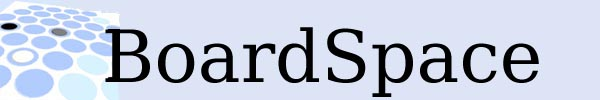
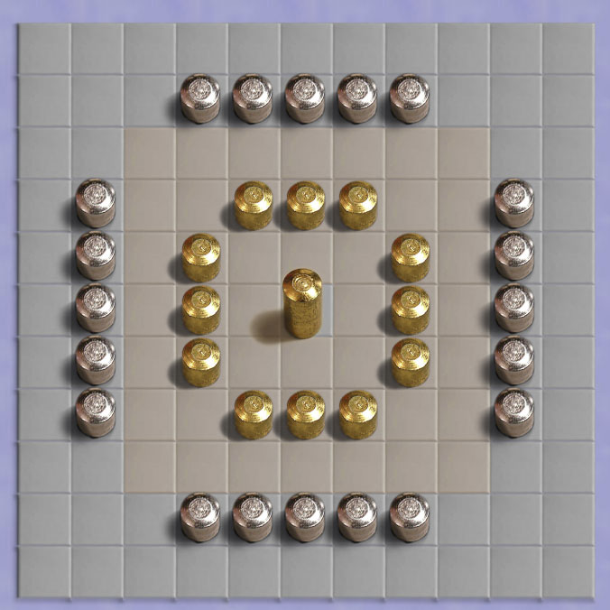

Tablut |
 |
Gobblet |
| Register |
Get the application |
Breakthru
Breakthru was designed by Alex Randolph and published by 3M in 1965 as
one of the 3M bookshelf games. It's a naval battle with unequal
forces and different objectives for the two sides, very much in the
spirit of the ancient Viking game Hnefatafl. |
 Playing Breakthru at Boardspace
Breakthru is played as a variation of
Tablut, using the same board and fleets.
The fleets start in a standard position. First gold, then silver
can rearrange their ships before play starts; gold within the center
area, silver outside it. Then gold either makes the first move,
or passes to let silver move first.
|
| Breakthru at
BoardGameGeek |
Wiki article |
| Breakthru
rankings at Boardspace |
Breakthru game archives |
| Breakthru rules |
About Tablut at Boardspace |
|
|
Site Map |
Go to BoardSpace.net home page |